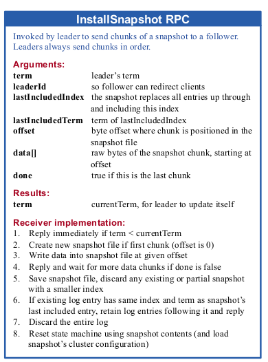

前边微服务框架选择中，反复看到一致性的协议，这一阶段就来对这些一些进行研究，包括：Paxos协议、Raft协议、Gossip协议，本文是这一系列第二篇：Raft协议
简介
初衷
简单讲，Paxos太难啦，于是他们想设计一个又好理解又好实现的一致性算法，于是就有了Raft。他们指的是斯坦福的Diego Ongaro与John Ousterhout。下图为Diego Ongaro
Raft协议特点
- 强leader：日志条目只允许从leader流向其他server，这简化了复制日志的管理。
- leader选举：Raft使用随机定时器选举leader，这仅在已有心跳基础上增加少量的机制。
- 成员变化：对于改变server集群，Raft采用一种新的共识方法，使两种不同的配置在过渡时期可以重叠，这样在集群配置发生改变的时候，可以正常运行。
Replicated state machines
。如上图，每一个server都存储包含一系列指令的日志，状态机按次序执行这些指令。不同server的Log中每个位置上的指令完全相同，当状态机按次序执行这行时，产生的状态就是确定的。
保持复制日志的一致就是一致性算法的工作，当每个server上的Consensus Module接收到clinet的指令时，将他们添加到Log上。为了保证每个server上log中指令与指令顺序完全一致，不同server上Consensus Module之间需要通信。一旦指令被恰当的复制，每个server上的状态机就会按顺序执行它们，然后将结果返回给client。最终server形成了一个高可用的状态机
Raft算法
Raft首先选举一个杰出的leader，然后leader全权负责复制日志。它接收client的日志条目，然后复制到其他server上，并告诉server何时可以安全的将日志应用到状态机上。
基本概念
服务间状态转换
任何事件，server都处于leader、follower、candidate三者之一的状态。正常情况下，集群中有一个leader，其余都是follower。
Follower是被动了，它从不主动提出申请，仅是响应leader与candidate。
Leader处理处理所有client请求，如果一个请求发送给follower，它会将请求重定向给leader
candidate用来选举新的领导时间划分
Raft将时间划分成任意长短的term。Team用连续的整数编号。
每一段term都是以选举开始，一个或多个candidate师徒成为leader，一旦其中一个candidate当选，在tearm剩余时间，它将成为leader。
有时候会出现t3的情况，在tearm时间段内，由于candidate瓜分了选票，没有leader胜出，Raft会开始一轮新的选举。
term扮演逻辑时钟的角色。由于它的存在，server可以检测到过期的leader发出了过时的信息。
ps: 在这里可以看出term对应paxos中的index
Leader选举
Raft使用心跳机制来触发leader选举。为了维持leader的权威，它周期性的发送心跳信号（没有日志条目的AppendEntries RPC）。如果一个follower在一段时间内（这个时间成为election timeout）没有接收到心跳，它就假设集群中没有leader，从而发起一个轮新的选举。
follower增加自己当前的current term，并将自己转换成candidate状态。接着并发的向其他server拉选票（RequestVoteRPC）。大部分时候它会成功当选；少部分时候当它在等待选票的时候，收到了其他candidate拉选票的请求，它会判断自己的current term与另外一个candidate的term，如果一样大，它就会转成follower，如果自己的更大，那么它就拒绝该请求；极小部分时候它与其他candidate旗鼓相当，平分了选票，造成没有leader选出的尴尬局面，这种情况在时间超过一个election timeout后，就会开始新一轮的选举。
对于election timeout就有一个精心的设计了。试想如果每个server的election timeout相同，当leader宕机时，大家同时觉察到天下无主，竞争势必会激烈，容易造成没有leader的局面。那如果election timeout每个server都是在一范围内的随机，总有幸运的server较早的觉察到机会，也就减少了竞争，增加了leader选出的概率。
ps：candidate在等待选票的时候，如果其他candidate拉选票的申请，这里存在问题。如果他们的term一样大，而参选的candidate都退出，岂不一样都没有leader？如果都不退出，而是等待选票，大多数的获胜，从算法上看，并不排除follower为candidate都grant【因为图中拒绝是if term < currentTerm】，这样两个都可能成为大多数。当然如果是term <= currentTerm应该不会出现这种情况。这样如果某个candidate得到了大多数选票，那么它就成为leader，反之成为fallower。
日志复制
每一个client请求都可以看做是一个待状态机执行的命令。leader接收到该请求后，将请求放到自己的log中，然后并发的向其他server发送复制日志RPC（AppendEntries RPC）,当日志安全的复制，leader就将该日志应用到状态机上，并返回结果。如果follower宕机或者由于网络丢包，leader就会无限次的重新发送该同步RPC，知道全部follower都收到。
这里有一个概念要说一下，Log Maching Property：
- 在不同server日志上的两个条目，如果index与term都相同，那么他们存储的命令是一样的。
- 在不同server日志上的两个项目，如果index与term都相同，那么在它们之前的日志都相同。
leader在log的每个位置上最多创建一个条目，这样就满足了第一个属性
第二个属性通过在AppendEntries RPC时进行简单的一致性检查来满足。在leader发送的AppendEntries RPC中包含着preIndex与preTerm，follower收到后，会检查一下自己的index与term，如果不一致它不会添加新的日志。换句话说，只要leader知道follower添加了日志，那么就能保证他们的log是一致的。

下边简单介绍一下，当由于宕机、网络等问题，发生log不一致时，如何处理
Raft的做法很直接，有不一致，听leader的。leader通过强制follower复制自己的日志来处理不一致问题。这意味着follower中与leader有冲突的日志会被重写。
这样就引起了下面这个问题，要想重写，leader需要找到从何处开始不一致
在正常情况下，由于AppendEntries RPC的存在，leader能发现与某个follower发生了不一致，然后它就递减index发送给这个follower，直到与follower达成一致。然后follower删除一致点后冲突的日志，并用增加server的日志
ps：既然是递减index，那要保证leader的index是最大的，否则递减是不成功的，这就回顾选举阶段的工作，能否保证leader中的index是最大的。
另外一个由于不一致可能发送在leader之间的term，在补全这些条目时，使用的应该是条目的term，而不是leader的term
安全
到目前为止，Raft协议主线已经完成，我相信下边这些内容，是测试过程中发现的不足，然后对Raft协议进行的修正。
这里首先要提出问题：如leader提交了几条日志条目，而follower正好在这个时间不可用，接着偏偏它又被选举成leader，于是重写这几条条目，结果不同的server的状态机上，可能执行了不同的指令，造成了不一致。
选举限制
在很多以leader为基础的算法中，leader都需要存储所有的已提交的log，Raft也是如此。它通过在选举过程中增加限制：只有包含所有已提交的条目，才有资格成为leader。拉选票的RPC（Request Vote RPC）中包含candidate的log（preIndex与preTerm），follower在投票时，拒绝那些比自己的index、term低的请求。ps：这里隐含，只要大多数的fallow同意即可成为leader，如果存在仅有少部分有某个日志条目，那么即使它们拒绝，也不会阻止新leader的产生。
提交之前版本的term
当日志条目被复制到大多数的server上之后，leader才会提交该条目，如果这时候leader宕机了，一般情况下新的leader应该负责这个条目。但为了减少麻烦，Raft规定，leader只会提交当前term的日志条目。一旦一条日志提交成功，由于日志匹配特性（Log Matching Property）的存在，之前的条目间接被提交。
Leader完整特性（Leader Completeness Property）
如果一个server，将一个指定index的日志条目应用到了其状态机，那么所有其他server在这个index上，不会应用不同的条目。某个时刻，server应用了一个日志条目，一直到这个条目，它的的日志必须与leader的日志一致。
集群配置更改
现实中，偶尔会出现需要修改配置的情况，比如更换坏的server，或者更改备份的方式等。为了更改配置机制的安全，Raft需要实现在集群不能完全离线的前提下，实现一致性。整个过渡期间，不会同时出现2个leader的情况。为了保证安全，配置文件的更改必须使用2PC方式（要么都做、要么都不做）。Raft集群首先达到一个联合一致（joint consensus），一旦联合一致提交，系统接着过渡到新的配置上。所谓的联合一致，包括新旧2种配置下的一致，这时：
- 日志条目会复制到2种配置下的所有server
- 任意一种配置的server都可以成为leader
- 协议（选举，日志提交）需要满足2种配置各自的多数同意
ps: 主要是在Cold,new阶段，一致性需要双方都同意。
日志压缩
Raft的日志不能无限制的增长，通过快照的方式进行压缩。快照时，当前系统全部的状态都写在持久化的快照上，然后到快照点的全部日志，全部删除。
尽管一般server会独立的生成快照，但leader也会偶尔发送它的快照给落后的follower。这种情况经常在leader已经删除了老旧的日志，而follower还没有这些日志的时候发生。这时候leader发送一个新的RPC：InstallSnapshot RPC，将它的快照发送过去。

对比
这样Raft协议就简单的介绍完了，对比Paxos，这篇论文写的更详细，也确实易懂一些。Raft中的term对应Paxos中的index，Raft在leader election阶段，对应的是Paxos的Prepare阶段。在Raft中选出了leader，也就是选出了term，在Paxos选出了index。
深度对比Paxos最后提出的状态机，就会发现与Paxos中最大的不同是Raft在选出leader后，follower执行leader的命令即可，而Paxos的acceptor还是会prepare、accept去交互去完成一致性。Paxos中最后的杰出proposer与Raft的leader有些相近，但地位若于leader。
要说Raft有什么不好的，大部分的时间，系统只要一个leader就可以完成工作，其余4台机器，只在选举时候参与一下工作即可。fallow有没有可能对client的读请求进行响应。